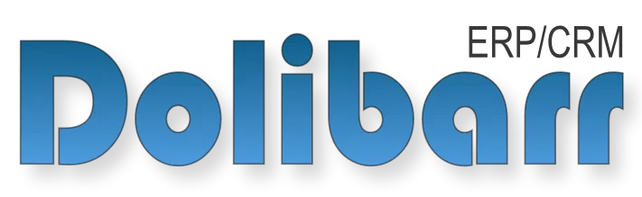

¿Qué es Dolibarr?
Dolibarr ERP/CRM es un software de gestión empresarial de código abierto que integra funcionalidades de ERP y CRM en una sola plataforma. Permite gestionar clientes, facturación, inventario, proyectos, recursos humanos y mucho más. Es fácil de instalar, usar y personalizar, y está orientado tanto a pequeñas como a medianas empresas.

¿En qué sistemas está disponible Dolibarr?
- Linux: Muy recomendado para servidores (Debian, Ubuntu, CentOS, etc.).
- Windows: Instalador disponible para entornos de pruebas y producción.
- macOS: Puede instalarse mediante paquetes o usando Docker.
- Cloud: Disponible en servicios cloud y como SaaS en dolibarr.org.
- Docker: Imágenes oficiales para despliegue rápido en contenedores.
Requisitos de hardware recomendados
- Procesador: 1 GHz o superior (recomendado 2 núcleos o más).
- Memoria RAM: Mínimo 1 GB (recomendado 2 GB o más para varios usuarios).
- Almacenamiento: 1 GB libre mínimo (SSD recomendado para mejor rendimiento).
- Base de datos: MySQL/MariaDB (recomendado) o PostgreSQL.
- Servidor web: Apache, Nginx o compatible con PHP.
- PHP: Versión 7.0 o superior.
Características principales
- Gestión de clientes, proveedores y contactos.
- Facturación, presupuestos y pedidos.
- Control de inventario y almacenes.
- Gestión de proyectos y tareas.
- Gestión de recursos humanos y ausencias.
- Agenda, calendario y recordatorios.
- Modularidad y extensiones (módulos adicionales).
- Acceso web y multiusuario con permisos.
Recursos y enlaces útiles
Ejemplo de flujo de trabajo en Dolibarr
- El usuario accede al panel y crea un nuevo cliente o selecciona uno existente.
- Se genera un presupuesto y se envía al cliente.
- El presupuesto aceptado se convierte en pedido y posteriormente en factura.
- El sistema actualiza el inventario y registra el movimiento en almacén.
- La factura se marca como pagada y se actualizan los informes financieros.
Video: Cómo instalar Dolibarr paso a paso
En este video se explica el proceso de instalación de Dolibarr en un entorno típico. Puedes pausar, avanzar o retroceder.
Video: Configuración básica de Dolibarr
Este video muestra cómo realizar la configuración inicial de Dolibarr: datos de empresa, usuarios, módulos y opciones básicas para empezar a trabajar.